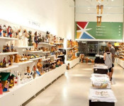

Atrações
- Paço do Frevo
- O Paço do Frevo é um espaço cultural dedicado à preservação e promoção do frevo, ritmo musical e dança típicos de Pernambuco, localizado nas proximidades do monumento.
- Igreja de Nossa Senhora do Carmo
- Outro atrativo nas redondezas é a Igreja de Nossa Senhora do Carmo, construída no século XVIII e considerada obra-prima do barroco pernambucano.
- Feiras de artesanato
- Se você deseja aproveitar a sua visita para ir às compras, não deixe de visitar uma das feiras de artesanato distribuídas nas imediações do Marco Zero.
- Parque de Esculturas
- Não deixe de apreciar a vista deslumbrante para o Parque de Esculturas de Francisco Brennand, uma das joias do local.
